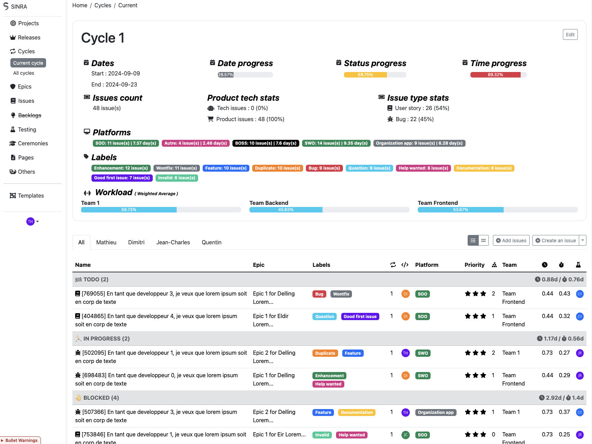
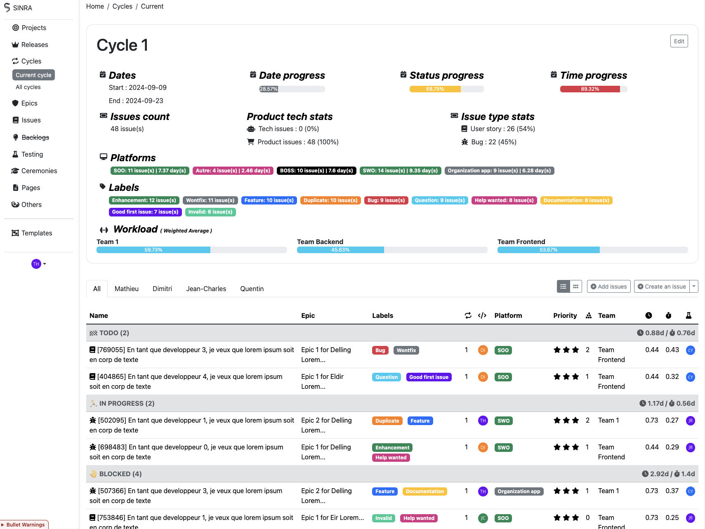

Sinra - La gestion de projet réinventée
Un outil de gestion de projet, simple et puissant, fusionnant la méthodologie en V et Agile pour une performance optimale.

Un outil de gestion de projet, simple et puissant, fusionnant la méthodologie en V et Agile pour une performance optimale.
Combinez la planification rigoureuse du Waterfall avec l’adaptabilité de l’Agile. Planifiez, exécutez, et itérez sans friction.

Réduisez le temps perdu en réunions et planifications. Sinra optimise la collaboration entre produits et développeurs, minimisant le besoin de discussions répétitives.

Simplifiez vos descriptions et documentations avec un éditeur semblable à Notion.

Prévisualisez directement vos maquettes dans l’interface.

2 champs modifiables seulement dans chaque issue pour une concentration maximale.


Personnalisez chaque aspect de votre projet avec des statuts, rôles d’équipe, et plus encore.

Alternez entre la vue Kanban et la vue Liste pour organiser vos tâches de la manière la plus productive.

Réduisez la complexité, optimisez vos projets. Téléchargez Sinra et commencez à collaborer plus efficacement dès aujourd'hui.
 Essayer Sinra
Essayer Sinra